2014-07-12
Walking The Walk... Kind of.
I awake to the familiar JT sounds of snoring and the damp smell of last nights beer being sweated out however I also have the unfamiliar feeling of being utterly frozen and a shivering wreck. At first I thought I had caught a mysterious Eastern European virus but it was actually due to JT first - Hostel AirCon which was on full blast. I gaze up and the luxury device willing it to turn off and then spot the fact it is directly parallel is RP's top bunk... Those aren't grey hairs in his beard - they're icicles! After drifting in and out of consciousness for several hours disturbed by a mix of Aussie & Irish accents we vacate the refrigerator with bunk beds and step into the afternoon sunshine to thaw out.
In a desperate attempt to get out and see the city rather than just the bottom of a Cuic pint glass Jimbo is hell bent on a bike tour. Shauny G boycotts the idea citing the crazy drivers as the biggest reason - Safety First - I'll let you the reader decide on the real reasons. In the end we agree on an early evening 2 hour walking tour so long as a decent lunch is on offer beforehand. It is.... As for the walking tour well more on that later.
In RP's bid to find "the door" he takes us off piste and into a spacious courtyard which is home to one of Bucharest's oldest and grandest buildings originally built for tired travellers so where better to get a feed... The usual fantastically tasty menu of meat and potatoes arrives accompanied by various local ales and healthy serving of bland polenta - the former was consumed the latter not so much. Just as Jimbo hints at this being a perfect reception spot for a potential future Shauny G wedding in walks a bride, then another, then another... Within half an hour the place is banged out with at least 3 weddings and their respective entourages. So we decide to make for the exit in fear we may heckle a best man mid speech. As it turns out RP and I were escorted off the premises anyway for walking up the dilapidated section of the building - Safety First.
Onto Jimbo's walking tour we head. Now if you haven't been on one of these before they have many variables - the tour guide, your tour colleagues and the content. For Shauny G there is one other variable to consider - the sit down and have a beer rather than walk about with Korean students and get RP to give me the headline facts later variable. As the tour conveniently went straight past the start of Old Town Shauny G grasped said variable and bid Jim & RP farewell and hung his walking boots up for the rest of JT8... Or so it seemed.
2 hours and 3 casual pints later in a familiar bar from last night so as to minimise further walking about when I finally ended up meeting the walking addicts Shauny G receives a message from our esteemed leader... "As a challenge for your non completion of the walking tour you have to come and find us. Grab a map - come to Carlsberg Fan Zone. You have 15mins". Had the request been to meet them at a museum I would have been fucked but a place which sole purpose is football and beer and the fact I wanted to go there anyway for these precise reasons... No worries... its the other side of town but I'd be there in 7 and you can keep your map!
Sure enough I arrive but no sign of my travelling companions...? Must've beat them here I presume... Haha... Oh ye of little faith - "3 Carlsberg's please bar man" I say proudly and as I hand over crisp plastic Lei note my phone goes again... "Go to the bar directly behind the screen. Speak to the waitress with the white top and pink shoes - she will give you further instructions". The crafty gobshites.
So here I am. In the fanzone solo with 3 pints of bloody Carlsberg searching for a Romanian waitress with penchant for brightly coloured shoes. After a few moments search sure enough there's my girl pink shoes en all. I meekly ask if he has any instructions to which she nods, walks me into the bar and provides a note... "Come to the church where women pray for husbands on a Tuesday night". This information should have meant nothing to me but ironically it was the only thing I remembered from the start of the cursed walking tour and happened to be at the complete opposite side of town. The wankers. So I begin my trek through the middle of the capital of Romania holding/drinking/spilling 3 pints of sodding Carlsberg on the streets and on myself. This must be it though - they must be in a bar next door. They've had their fun and made their point.... After getting lost a couple of times I see the church in the distance. The end is in sight... Literally as I arrive my phone goes again "At the church you will find a message in a brown bag in the green railings". HOW ARE THEY DOING THIS?!?
Sure enough there's the note "A man from Kosovo needs a word..." Jesus! That's back where I started this fucking jaunt! If you've read RP's blog you be aware of this character and the fact that his dwelling is the moodiest bar in Bucharest. So now I've been walking for the best part of an hour - it's not a small town this place. I'm sweaty, moody, smell of Carlsberg and finally lost. Good and proper.
After finally getting my bearings and going the very long way round I stand at the foot of the long moody walkway and enter. They want to be in here mutter to myself.... Nope. Nothing. Just several very moody bartenders and an old lady who didn't like the sight of me let alone the smell. Phone goes - "Bring a packet of matches from the bar to prove you were there. There's a beer outside the front entrance waiting for you". Bloody hell! Even getting the matches wasn't straight forward and I had to buy a beer and nearly had an argument with the Old Lady but sure enough as I walked outside there they were in the same very bar which I had been at all of an hour ago before I began my ad hoc treasure hunt across Bucharest with my matches matches in hand. Needless to say they made their point in an emphatic manner.
The remainder of the evening followed in a similar guise to Night 1. Big bar crawl, lots of booze, a little less dancing (sore feet from night 1), some amazing bars with some great characters and topped off with the best kebab in the world.
So what have we learned on the 8th year of this prestigious tour???
- Bucharest is a fantastic party town - you could go flat out every night for a month and not get to every bar.
- The city is in desperate need of a Health and Safety department - everywhere you look there's the potential to get impaled or electrocuted.
- The people of Bucharest are cool. Not always the friendliest but certainly good people... We've met much worse. Also everyone is Romanian with next to no foreigners which is unusual in a capital and a welcome change.
- It's sooooo cheap. Most expensive beer was under £3 and we were distraught about it. Strongly recommend you get out here before the stag do's get wind of it and the prices go through the roof as a result.
But most importantly.... If and when you get invited on the walking tour just bite your lip oooh and ahhhh at the pretty buildings and ignore the giggling Korean students. Trust me the alternative isn't all it's cracked out to be.
Here's to JT9... Wow. Almost a decade!!!!
Over and out.
Shauny G.
Photographs
{kind=link}
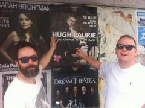
{kind=link}
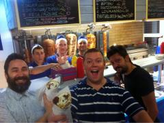
{kind=link}
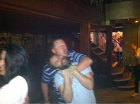
{kind=link}
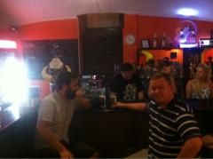
{kind=link}
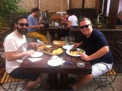
{kind=link}
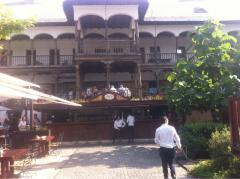
{kind=link}
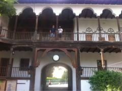
{kind=link}
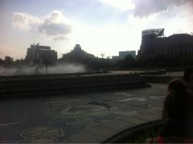
{kind=link}
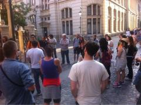
{kind=link}
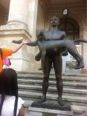
{kind=link}
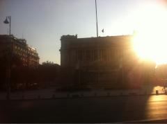
{kind=link}
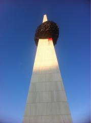
{kind=link}
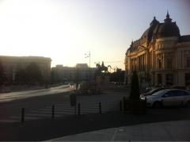
{kind=link}
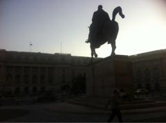
{kind=link}
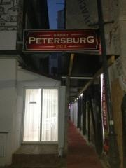
{kind=link}
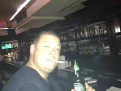
{kind=link}
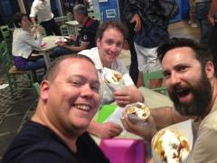